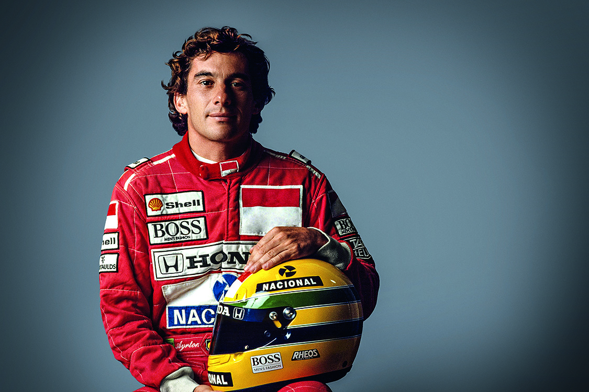
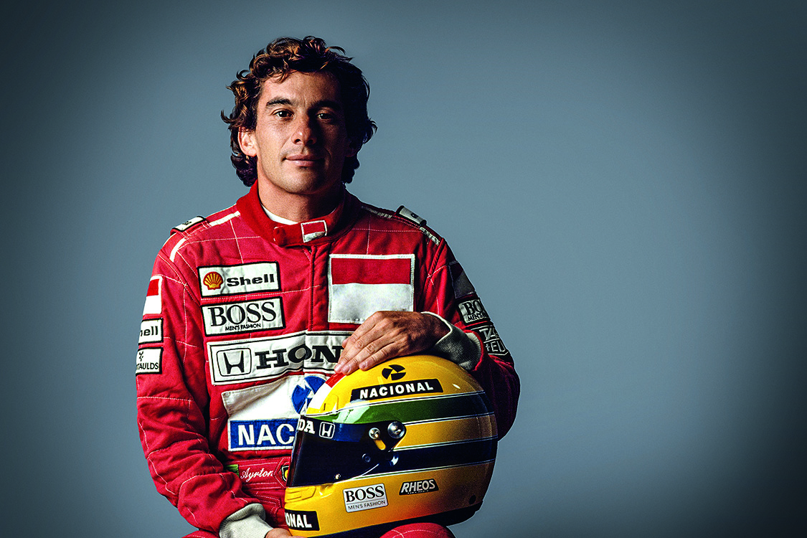

Início na F1
Em 1984 Ayrton Senna ingressou na Fórmula 1, pela equipe Toleman e na segunda competição já conquistou seu primeiro ponto. No final da temporada, além de 13 pontos conquistados subiu três vezes no pódio.
Ayrton Senna da Silva foi um piloto brasileiro de Fórmula 1, campeão da categoria três vezes, em
1988, 1990 e 1991. Ele começou sua carreira competindo no kart em 1973 e em "carros de fórmula" em
1981, quando venceu as Fórmulas Ford 1600 e 2000. 1983 alcançou o título de campeão do
Campeonato Britânico de Fórmula 3 batendo vários recordes. Seu desempenho impulsionou sua ascensão
à Fórmula 1, fazendo sua primeira aparição na categoria no Grande Prêmio do Brasil de 1984 pela
equipe Toleman-Hart. Em sua primeira temporada, Senna pontuou em cinco corridas, fechando o ano com
treze pontos e a nona posição na classificação geral dos pilotos. No ano seguinte, ingressou na
Lotus-Renault, pela qual venceu seis grandes prêmios ao longo de três temporadas.
Em 1988, juntou-se ao francês Alain Prost na McLaren-Honda, com o qual teve grande rivalidade.
Senna venceu oito etapas daquela temporada e sagrou-se campeão mundial pela primeira vez. Após
a polêmica final de 1989 com Prost que resultou na segunda colocação do torneio, ele retomou o
título em 1990, vencendo novamente na temporada seguinte, tornando-se o piloto mais jovem a
conquistar um tricampeonato na Fórmula 1 até então. Em 1993, Senna foi vice-campeão, vencendo
cinco corridas. Transferiu-se para a Williams em 1994, onde disputou apenas três etapas, a
última sendo o Grande Prêmio de San Marino, onde se acidentou e acabou morrendo. Ao todo, Senna
participou de 161 grandes prêmios na Fórmula 1, alcançando 41 vitórias, 80 pódios, 65 pole
positions e 19 voltas mais rápidas.
Além das corridas de carros, Senna dedicava-se a jet skis, motos, aeromodelos e principalmente
helicópteros. Ele também administrava diversas marcas e empreendimentos, além de ter
patrocinado vários programas de assistência filantrópica, principalmente os ligados a crianças
carentes. Depois de morrer, sua irmã, Viviane Senna, fundou o Instituto Ayrton Senna, uma
organização não governamental que oferece oportunidades de desenvolvimento humano a crianças e
jovens de baixa renda. Além disso, o personagem Senninha foi criado com a intenção de atingir o
público infantil com os ideais do piloto, como a superação, dedicação e o gosto pela vitória.
Sua morte, assim como o funeral e velório, provocou uma das maiores comoções da história do
Brasil, bem como repercussão mundial. Em pesquisas feitas com jornalistas especializados,
pilotos e torcedores, é considerado o melhor piloto da história da Fórmula 1. Em 1999, foi
eleito pela revista Isto É o esportista do século XX no Brasil. No auge de sua carreira, era
considerado o maior ídolo brasileiro, posto que mantém mesmo depois de duas décadas de sua morte.
 

Em 1984 Ayrton Senna ingressou na Fórmula 1, pela equipe Toleman e na segunda competição já conquistou seu primeiro ponto. No final da temporada, além de 13 pontos conquistados subiu três vezes no pódio.
Em 1987 Ayrton Senna assinou com a McLaren-Honda. Em 1988 subiu ao pódio pela primeira vez, como campeão mundial de Fórmula 1, no GP de Suzuka no Japão, depois de uma disputa acirrada contra o companheiro Alain Prost.
O bicampeonato mundial veio em 1990, também em Suzuka, no penúltimo GP da temporada, quando deu o troco no seu rival Alain Prost, que no ano anterior havia vencido o campeonato de forma pouco ética, quando nas voltas finais, Senna tentou ultrapassá-lo, mas houve o choque e os dois saírem da pista.
Em 1991, novamente em Suzuka, Ayrton Senna conquistou o tricampeonato mundial disputando o título da temporada com o inglês Nigel Mansell, da Williams, que abandonou o circuito na 10.ª volta com problema nos freios.
Em 1994, Ayrton Senna foi contratado pela equipe Williams. No dia 20 de janeiro fazia seu primeiro teste com o carro da equipe inglesa. A primeira corrida da temporada de 1994 foi em Interlagos, no Brasil, onde conquistou a pole position, mas rodou ao tentar perseguir Schumacher e abandonou a corrida.
No dia 1 de maio de 1994, na sétima volta do circuito de Ímola, na Itália, durante o Grande Prêmio de San Marino, o carro de Senna, voando a 300 km/h, chocou-se contra o muro de proteção na curva Tamburello, provocando a morte do piloto.